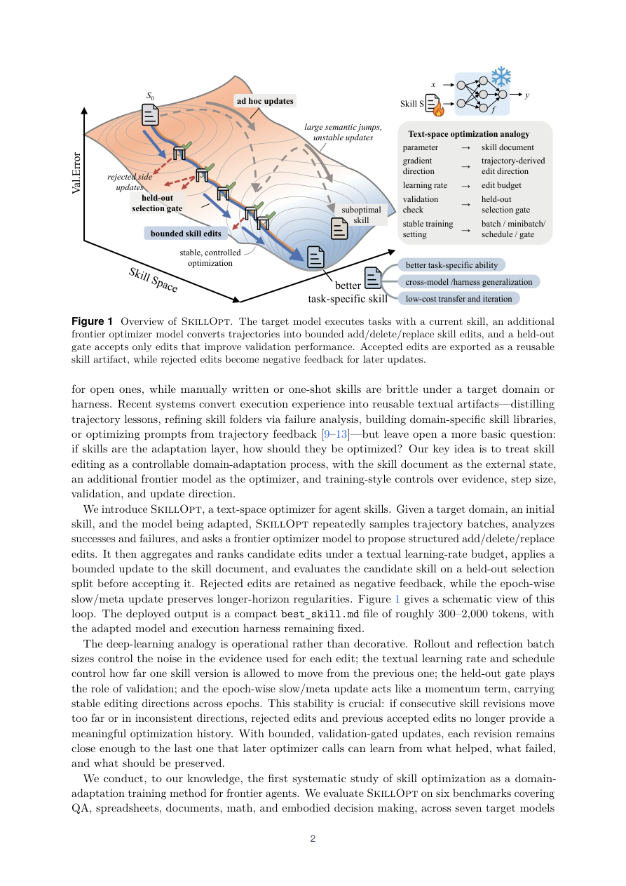

#1
★ 8/10
SkillOpt: Executive Strategy for Self-Evolving Agent Skills
SkillOpt：自进化智能体技能的执行策略优化器

图 Figure · Page 2 of paper
🎯 像训练神经网络一样系统地优化AI智能体的"技能说明书"
A systematic optimizer that trains AI agent skill documents like neural network weights for reliable improvement.
🗣️ 一句话比喻 · Plain-English Analogy就像给一位厨师提供一本可以不断修订的食谱——每次烹饪后，根据食客的评分，只对食谱做小幅调整，而且只有让菜更好吃的改动才会被写进新版本，最终这本食谱会越来越精准，厨师的水平也随之稳定提升。Think of it like a chef who has a recipe book that gets smarter after every meal: after each dish, a coach suggests only tiny tweaks — and only writes them down if the diners actually rate the food higher. Over time, the recipe book becomes incredibly precise, making the chef reliably better without ever having to start from scratch.
| 维度 | 中文 | English |
|---|---|---|
| ❓ 待解决 的问题 |
现有的AI智能体（比如编程助手或问题解答机器人）依赖人工编写的"技能说明书"来指导自己的行为。这些说明书要么是人手工写的，要么是AI一次性生成的，要么是以松散无纪律的方式自我修改的——就像一个运动员只靠感觉训练，没有系统的教练指导。结果是：技能很难稳定提升，甚至越改越差。 | AI agents like coding assistants rely on hand-written "skill documents" that guide their behavior. These documents are either crafted by humans, generated in one shot by another AI, or revised in a sloppy, uncontrolled way — kind of like an athlete training purely by gut feeling with no structured coaching. The result is that agent skills rarely improve reliably and can even get worse over time. |
| 💡 解决 的亮点 |
• 首创"文本空间优化器"：将技能文档当作神经网络的权重来训练，引入严格的增/删/替换编辑机制，只接受能让验证分数提升的改动。 • 设计了"文本学习率"预算、拒绝编辑缓冲区和分轮次慢/元更新，让技能训练像深度学习一样稳定可控。 • 零额外推理开销：所有优化在部署前完成，上线后不增加任何模型调用。 • 优化后的技能文档可跨模型、跨执行环境迁移，仍能保持效果。 | • First systematic "text-space optimizer" for agent skills — treats skill documents like neural network weights with strict add/delete/replace edits that are only accepted when they actually improve performance. • Introduces a "textual learning rate" budget, rejected-edit buffer, and epoch-wise slow/meta updates to keep skill training stable and reproducible. • Zero extra cost at deployment — all optimization happens beforehand, so using the agent is no slower. • Optimized skill documents transfer across different AI models and execution environments without needing to re-optimize. |
| 🧪 实验 内容 |
研究在6个基准测试（涵盖数学、编程、推理等任务）和7个目标模型上进行了实验，共评估了52个（模型、基准、执行环境）组合。执行环境包括直接对话、Codex智能体循环和Claude Code三种。基线对比方法包括人工编写技能、一次性LLM生成、Trace2Skill、TextGrad、GEPA和EvoSkill。还做了跨模型、跨执行环境、跨相近基准的迁移实验。 | Experiments were run across 6 benchmarks covering math, coding, and reasoning tasks, with 7 different target AI models, totaling 52 evaluated combinations. Three execution setups were tested: direct chat, Codex agentic loop, and Claude Code. Baselines included human-written skills, one-shot LLM generation, Trace2Skill, TextGrad, GEPA, and EvoSkill. Transfer experiments tested whether optimized skill documents stay useful when moved to different model sizes, different execution environments, and nearby benchmarks. |
| 📊 实验 结果 |
SkillOpt在全部52个（模型、基准、执行环境）评测单元上均达到最佳或并列最佳，击败了所有竞争方法。在GPT-5.5上，直接对话模式下平均准确率提升+23.5分，Codex智能体循环模式下提升+24.8分，Claude Code模式下提升+19.1分。迁移实验也验证了优化后的技能文档在跨模型规模、跨执行环境迁移时仍保留价值。 | SkillOpt achieved best or tied-best results on all 52 evaluated (model, benchmark, harness) cells, beating every competing method. On GPT-5.5, it raised average no-skill accuracy by +23.5 points in direct chat, +24.8 points inside the Codex agentic loop, and +19.1 points inside Claude Code. Transfer experiments confirmed that optimized skill artifacts retain their value when moved across model scales, execution environments, and neighboring benchmarks. |
| 🏁 结论 | SkillOpt证明了可以像训练神经网络权重一样系统、可控地优化AI智能体的文本技能文档，并在大规模基准测试中显著超越了所有现有方法，同时优化成果还能跨环境迁移复用。 | SkillOpt proves that AI agent skill documents can be optimized as systematically and reliably as neural network weights, achieving state-of-the-art results across 52 benchmarks while producing transferable skill artifacts that remain useful in new settings. |
| 🔗 论文 链接 |
arXiv: 2605.23904v2 · 📥 PDF | |
⚙️ Method · 方法详解
SkillOpt把技能文档视为一个"外部参数"，用一个单独的优化器模型来训练它。优化器观察智能体多次执行任务的得分记录（称为rollout），然后提出对技能文档的小幅修改（增加一句、删除一句或替换一句）。每次修改都要在一个"验证集"上检验效果，只有真正提升了成绩的修改才会被保留——这就像深度学习中只有降低损失函数的梯度更新才会被接受。为了防止改动过于激进，系统设置了"文本学习率"来限制每轮能改多少内容，还保留了一个"拒绝编辑缓冲区"，供后续轮次参考和重新尝试。
SkillOpt treats the skill document as an "external parameter" and trains it using a separate optimizer model. The optimizer watches scored records of the agent completing tasks (called rollouts), then proposes small edits — adding, deleting, or replacing a sentence — to the skill document. Each edit is tested on a held-out validation set, and only edits that genuinely improve the score are kept. This mirrors how deep learning only accepts weight updates that reduce the loss. A "textual learning rate" limits how much can change per round, and a "rejected-edit buffer" stores failed attempts so the system can learn from them in later rounds.
📐 Key Formulas · 关键公式
\[\text{skill}_{t+1} = \text{skill}_t \oplus \Delta \quad \text{iff} \quad V(\text{skill}_t \oplus \Delta) > V(\text{skill}_t)\]
💡 技能文档只有在验证分数严格提升时才接受编辑更新，类似深度学习中只有降低损失的梯度更新才被接受。
A skill document update (edit Δ) is only accepted if the new version scores strictly higher on the validation set — mirroring how gradient updates are only applied if they reduce the training loss.
🌟 Why It Matters · 为什么重要
AI智能体要在实际产品中可靠运行，就需要稳定提升的技能——SkillOpt提供了一套工业级的技能训练框架，让AI助手变得越来越好用，而不是靠运气。这项研究为未来"自我进化的AI产品"奠定了方法论基础，可能深刻影响编程助手、客服机器人等实际应用的开发方式。
Real-world AI products like coding assistants and chatbots need skills that reliably get better over time — SkillOpt provides an industrial-grade framework for exactly that, replacing guesswork with principled training. This research lays the groundwork for truly self-improving AI products, which could transform how developers build and maintain AI-powered tools.